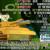

This is Google's cache of
https://mohu.rocks/article/6106
.
It is a snapshot of the page as it appeared on 29 Aug 2021 02:20:25 GMT.
The
current page
could have changed in the meantime.
Learn more
.
Full version
Text-only version
View source
Tip: To quickly find your search term on this page, press
Ctrl+F
or
⌘-F
(Mac) and use the find bar.
【故事接龙】用习近平思想指导打工 - 膜乎
突开
精甚
天网
登录
注册
故事接龙
习近平思想
...
档案工作
【故事接龙】用习近平思想指导打工
本小将因为双减被捕习班裁员，正在饥肠辘辘的时候还没饭吃。本小将在路上打算躺平睡大觉睡到习仲勋家的时候想起，一切要以习近平思想为指导，于是闭上眼睛默默念：要把中国人的饭碗牢牢端在自己手里。念完之后睁开眼，发现一个衣逼推着手推车过来了，上面还装着二百来斤麦子。
3
冰棒外交
2021-08-04
2 个评论
匿名用户
饥肠辘辘的我连忙上前。但只见这个衣逼嘴巴一咧，脖子一歪，狰狞地对我说道：臭外地的，上北京要饭来了，狂什么呀？
我也不甘示弱，牢记尼神爷爷对我们的教诲：这是你的国家吗？是你爸爸的还是你妈妈的？我在哪里，哪里就是我的国家。

习羊羊与灰战狼
常委
只听那衣逼颐使气指：习皇有令扫除一切低端人口，你个下贱的穷鬼，还不麻溜地滚出百京？
好你个资产阶级反动狗，习大大号召关心困难群众，你个富农倒公然踩在人民群众之上，不可忍！本小将立刻化身黑恶势力，三只手合力，扛起二百斤的手推车就跑。因为坚持一天跑步一千米的缘故，就算衣逼通了商宽了衣，也追不上肩扛重担的我。
要发言请先
登录
或
注册
要发言请先
登录
或
注册
发起人
治国理政
见着风是得雨
【故事接龙第五季】这一天，外卖河南国大总统背着二百斤的井盖，十条国道不换肩地将井盖顺丰快递到法定首都…（法拉盛的法）
【故事接龙第四季】当我按下“微博发布”的那一瞬间...
我妈死了
【故事接龙第三季】薄瓜瓜退出品葱账号，跳进了自己心爱的红色法拉利，向秦城疯狂驶去...
【故事接龙】以“习明泽突然被父皇从哈佛”为开头
我十四岁，讨厌习近
内涵丰富！热烈祝贺习近平总书记最新著作《维稳经》上市
【疯狂派乐迪+故事接龙】昨天跟一个在澳洲赌场习钱二十多年的脱支大哥喝韭，他的成功故事让我很震撼！
【故事接龙】农索寓言故事——小康皇帝的新农 featuring 机智的党妹
以习近平思想撰写职业生涯规划手抄报
推荐
共和国里当司机——刁大犬刁师傅之九二共识
共产中美2021之《习近平的锄头》【欢乐长文】
共和国里当司机——薄都督薄师傅
【代发】以下是某大陆公众号在未来某段时间的新闻标题
以习近平思想撰写职业生涯规划手抄报
《小学博士之消失的禅师·一》
[膜宣部官方]习总书记视察工作
《小学博士之外交智慧》
用习大大的温暖过冬
小姐老是喊:"习鸡巴!" "习不习鸡巴?" 到底是什么意思？
状态
最新活动:
2021-08-05
浏览:
1016